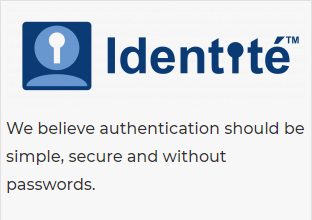
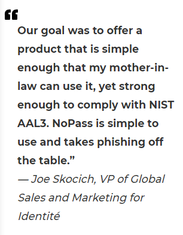

Collaboration Leverages Identité Authentication Technology to Promote Human Progression

CLEARWATER , FL, USA, July 15, 2021 /EINPresswire.com/ -- Identité™, a company founded by a team of security and enterprise software veterans who believe that authentication should be simple and secure for all users – without passwords, and the Virtually Testing Foundation (VTF), a California-based 501(c)3 e-learning nonprofit organization, today announced a humanistic technology partnership to share authentication technology for the progression of security methods for all. VTF developers, interns, and students will experience frictionless authentication first-hand and overcome the outdated risk prone dependence on passwords.

Identité NoPass™ will be implemented initially as the authentication platform for the VTF employee website allowing the cybersecurity-focused community to personally face how organizations go through the progression of accepting and adopting passwordless authentication. They will also see how to stop people from being fooled by hackers thus, preventing fraud and alleviating impersonation attacks like phishing. Integrations will include Slack, the Google suite, and the VPN standard in use.
Once the internal environment positively ensures and confirms VTF identities, Identité NoPass™ will be deployed for externally facing websites. Identité together with VTF is trying in some small way to improve the human login problem through simple and secure authentication without passwords.
The product family includes NoPass™ for Customers, NoPass™ for Employee MFA, and NoPass™ for Employee Single Sign-On (SSO). NoPass™ for Employee SSO authorizes employees to access multiple applications through one-time sign-on. NoPass™ is sold through direct contract or on the AWS Marketplace and is available for deployment on premise and AWS.
The authentication server is paired with an app on the user’s device(s) such that the credentials are kept safely on the trusted user device(s). Multiple factors of authentication, including a biometric, are executed with the end user only being burdened with a look, click or a tap. The user is protected from impersonators, fake websites and phishing attacks with Full Duplex Authentication®. NoPass includes an SDK which can be integrated into a company’s proprietary app to enable passwordless authentication. NoPass™ operates as an identity broker linked to existing authentication systems to enable MFA or as a passwordless MFA tool. In an enterprise environment, the MFA tool can reauthorize access for sensitive operations.
“Authentication should be simple and secure, and without passwords,” said Joe Skocich, VP of Global Sales and Marketing for Identité. “Our goal was to offer a product that is simple enough that my mother-in-law can use it, yet strong enough to comply with NIST AAL3. NoPass is simple to use and takes phishing off the table."
“VTF welcomed this partnership to combat the escalating incidents of hacking due in part to the pandemic and the migration of employees to work from home. By giving the cybersecurity community the ability to use passwordless authentication through a real-world, hands-on experience, they will be able to share with other organizations the benefits of improved security and the organizational change management involved with the adoption of passwordless technologies,” said Victor Monga, vice-chairman of the board at the Virtually Testing Foundation. “Identité and the VTF each share a community-focused mindset and dedication to serving the cybersecurity community, which made this an ideal partnership.”
Visit Identité’s website to learn how to improve authentication with just a click, a tap, and a look for passwordless, three-factor authentication.
About Identité
Identité is a security company specializing in passwordless authentication, offering a simple and secure method to eliminate passwords for employees and online customers. The NoPass products are designed to help all types of enterprises finally get rid of passwords. “Over half of users polled in a recent FIDO study showed a large majority of passwords are reused across accounts for personal and professional use,” says John Hertrich, founder and CEO of Identité. “Our NoPass suite of products add additional layers of security protecting companies from security risks involving stolen credentials. By using our patent pending Full Duplex Authentication, user will know they are connecting to a valid NoPass Server and the server will know it’s the real user.” The Company is committed to giving back to the cybersecurity community through collaborative partnerships like this one with VTF. For more information, visit Identité.us. Follow Identité on LinkedIn, and YouTube.
About Virtually Testing Foundation
Virtually Testing is a California- based 501(c)3 nonprofit organization. Our mission is to serve a cybersecurity-focused community by organizing speaker events, hands-on workshops, conferences, etc. We have developed a special internship program to allow individuals to leverage our community and learn about cybersecurity and perhaps take a life of career swing. We are offering the community an opportunity to develop cybersecurity skills or learn from scratch to successfully access a competitive trending industry. VTF also mentors and trains their interns to be in leadership and management roles by sharing real-world experiences and practicing through decision-making exercises. Our intern program can adapt to interns' ambitions and commitment. Virtually Testing also provides fiscal sponsorship, governance, board advisors and technical resources for new communities or established non-profit organizations.
How to Stop a Phishing Attack